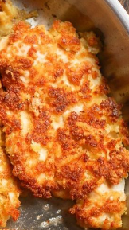

Parm Crusted Chicken

Ingredients
- 1 lb chicken breasts (thin, 4 pieces)
- 1 Egg
- 1 teaspoon garlic powder
- 1 teaspoon Italian Seasoning
- 1 cup Parmesan cheese (grated or shredded)
- ½ cup bread crumbs
- ¼ cup flour
- 1 tablespoon butter
- 1 tablespoon olive oil
Instructions
- First, paper towel dry the chicken and then prepare two bowls. One is for the egg, salt, pepper, garlic powder, and Italian seasoning. Next, you should whisk the egg mixture slightly.
- The second bowl is for the parmesan, bread crumbs and flour.
- Now it’s time to dredge each chicken breast piece in egg/seasoning mixture. After that place in the parmesan mixture and press. Turn to coat the other side of the chicken with parmesan mixture and press again.